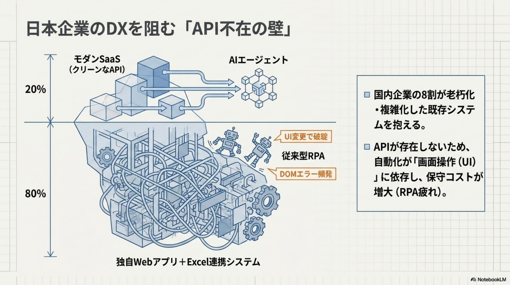
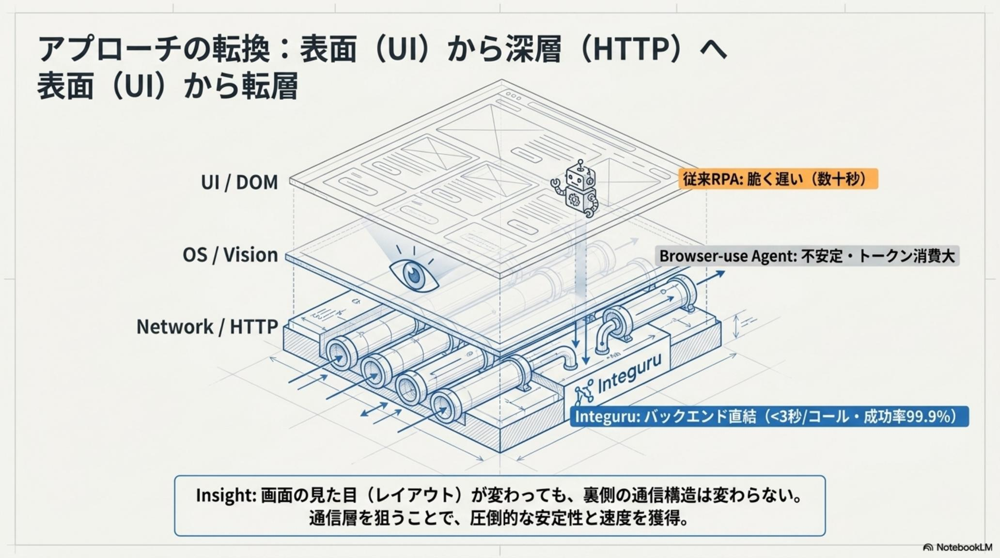
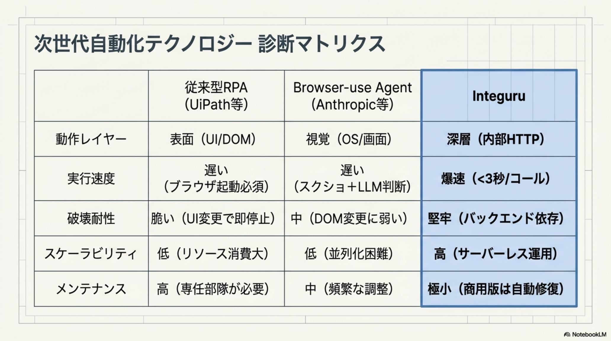
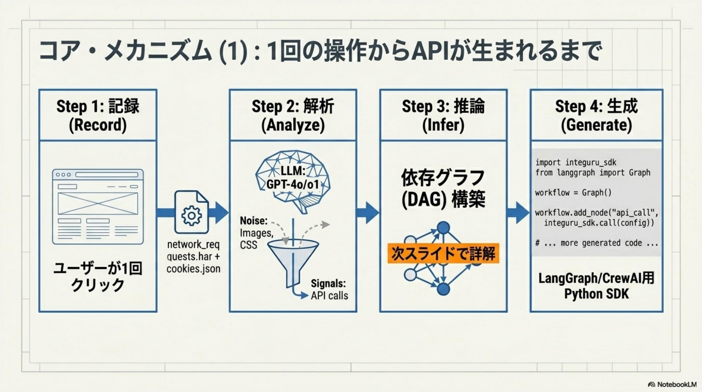
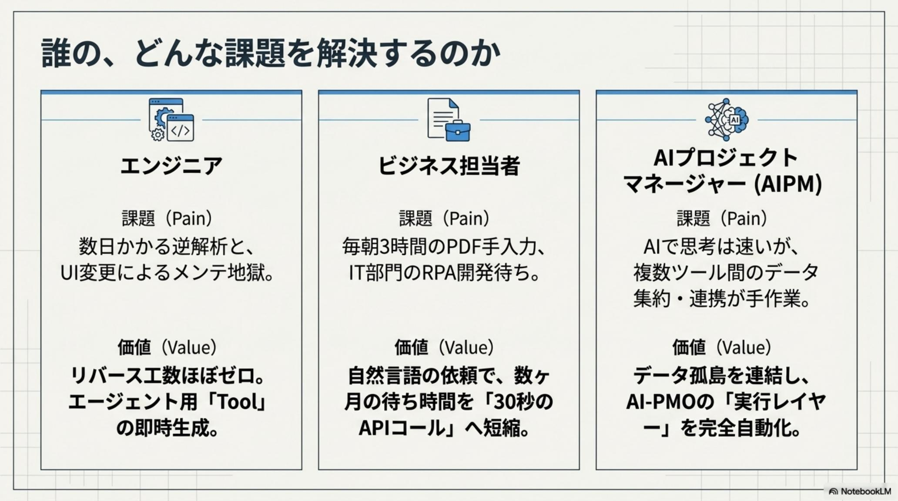
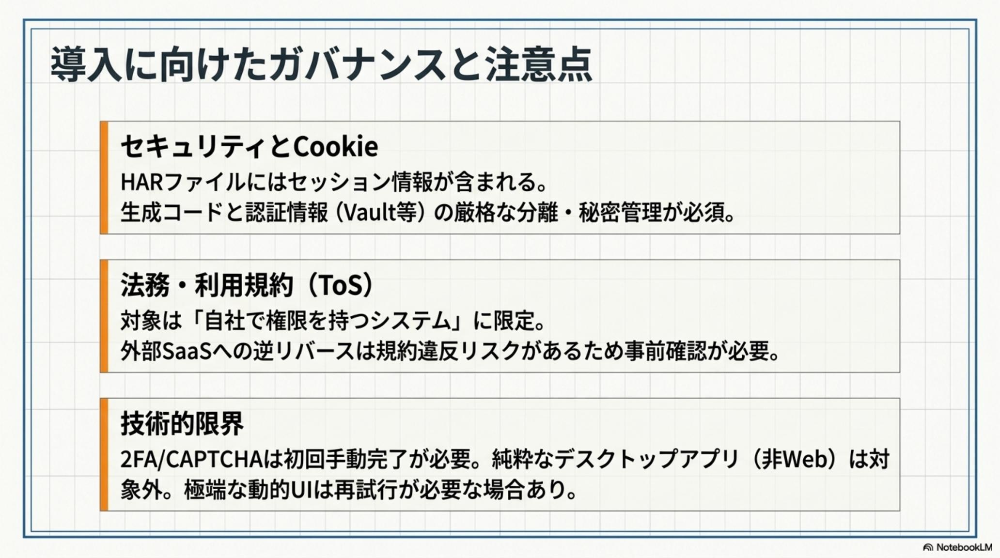
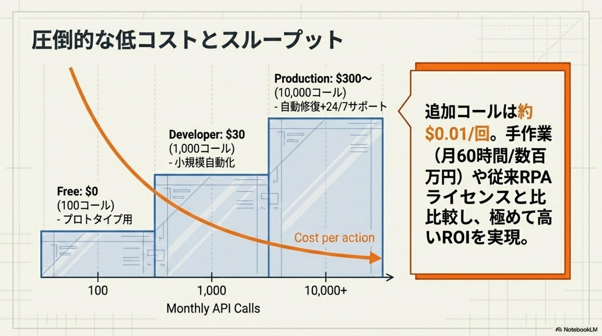

開発者・エンジニア
Before
公式 API のないシステム統合に 数週間のリバースエンジニアリングを要し、UI 変更のたびに発生する「メンテナンス地獄」に疲弊。
After
数分間の操作記録から AI が通信仕様を自動解析。工数はほぼゼロ、本来の ビジネスロジック開発へとシフト。
AIエージェントは「考える」ことを覚えた。だが、考えたことを 「実行する」 ための窓口 — API — が、企業の現場にはほとんどない。日本のレガシー環境ではなおさら。これが、AI 投資をサンクコストに変える「実行の壁」だ。
Integuru（インテグル） は、UI を模倣する RPA / Browser-use のパラダイムを覆し、HTTP レイヤーを直接制御する新たな自動化基盤。1 回の手動操作の HAR を録音し、LLM がノイズを除き、リクエストの依存関係を DAG として推論し、requests ベースの Python SDK を発明する。成功率 99.9%、約 3 秒/コール、$0.01/req。商用版の Auto-healing が仕様変更を自動再マッピングし、メンテを 1/10 へ。「API がないから自動化できない」という言い訳は、もはや通用しない。

LLM の進化で Reasoning（推論・計画）を担う思考エンジンは手に入った。しかし、それを実業務に接続する Action（実行・ツール利用）レイヤーが決定的に不足している。これが AIエージェント時代の「実行の壁」。壁の正体は、既存システムにおける 「API の不在」そのものだ。
日本のレガシー環境では、基幹業務の多くが外部接続用の窓口を持たない。結果、AI がどれほど緻密な業務計画を策定しても、最終段階で 「不安定な UI 操作」や 「人間による手作業」というアナログな介在を余儀なくされる。
UI レイヤーへの依存は、本質的に 脆い。1 ピクセルのレイアウト変更でプロセスが破綻し、CSRF トークンや動的な認証フローを 「見ることができない」。AI を本気で運用する組織にとって、これは技術的負債そのものだ。
Integuru の発想は単純であり、革命的だ。 「画面を模倣する」のではなく、通信を再現する」。HTTP 層を直接制御することで、UI の脆さから完全に独立した エンジニアリング資産を構築する。

Integuru が「API を自ら発明」する過程は、極めて論理的な 4 ステップに圧縮される。1 回の手動操作だけで、本物の Python SDK が生まれる — これが、構造的破壊の核だ。
対象操作を 1 回だけ手動実行し、ブラウザの DevTools / Playwright で全通信ログ（HAR）を 「録音」する。これが学習材料のすべて。
$ python create_har.py \
--url https://target.app/login
LLM がトラフィックを分類し、画像・広告・テレメトリ等の不要リクエストを除去。本質的な業務リクエストのみを抽出する。
filter: { static, ads, beacons }
keep: { business · auth }
リクエスト間の 因果関係を推論し、有向非巡回グラフ（DAG）として表現。ユーザー ID・CSRF トークン等の動的パラメータを再帰的に解決する。
DAG: login → token
→ query → result
requests ベースの Python コードを出力。商用 Cloud 版は Auto-healing で内部 API 仕様変更を自動再マッピングし、メンテを 1/10 以下に。
import requests
def fetch_orders(token): …

従来 RPA は DOM、Browser-use は視覚 — どちらも「画面」というレイヤーの脆さから逃れられない。Integuru は HTTP 層という不可視で安定した契約を相手にする。結果は、桁違いだ。
| Vector | 従来 RPA UIPath et al. |
Browser-use Vision-based |
Integuru — HTTP-native |
|---|---|---|---|
| 技術的対象 | DOM 要素・配置 | 視覚判断・OS 操作 | 内部 HTTP 通信 |
| 安定性 | 低（UI 変更で即停止） | 中（動的 UI に弱い） | 極めて高（バックエンド依存） |
| 処理速度 | 遅（数十秒〜分） | 低（LLM レイテンシ） | 高速 ≈3 秒/コール |
| 成功率 | 80% 前後 | 89% 前後 | 99.9% 以上 |
| 並列化 | 困難（リソース占有） | 困難 | 高（サーバレス可） |
| コスト | 高（ライセンス + 保守） | 中〜高（トークン消費） | 低 $0.01/req〜 |

Integuru の真の価値は、技術スコアではなく 「組織の機動力」の再定義にある。3 つのペルソナそれぞれに、Before / After の質的転換が起こる。

日本企業の IT 環境は、独自 Web アプリと Excel 連携が密結合しており、公式 API の整備が絶望的なケースが多い。この特異な環境こそが Integuru にとっての 「ブルーオーシャン」だ。

「2025 年の崖」を背景に、多くの企業が莫大なシステム刷新コストに直面しているが、Integuru は既存システムに 一切の改修を加えない 「非侵襲性」を誇る。
つまり、刷新コストを 回避しながら DX を加速させる「最終ピース」として位置付けられる。これは経営層にとって、技術選定の問題ではなく 戦略選定の問題だ。
パッケージ ERP の改修不能領域、グループ会社固有の Excel ポータル、買収先の古いシステム — これまで 「触れない」とされてきたすべての資産が、Integuru によって AI エージェントの手足に変わる。
OSS 版（v0）は create_har.py による手動記録で プロトタイピングに最適。商用 Cloud 版は自然言語と URL 入力のみの Recording-free 環境を提供する。月額 $30 から、Auto-healing と 24/7 サポート付き。
3 時間/日の手作業 → 30 秒の API コール。1 タスクの実行時間が、約 360 分の 1になる。
時給 5,000 円 × 60 時間/月 = 年間 360 万円/人の削減効果。10 人換算で 3,600 万円。投資回収は数週間。
HTTP 層の安定性により、メンテナンス工数を RPA 比で 90% 削減。商用 Auto-healing で更に 1/10。
「API がないから自動化できない」という言い訳は、もはや通用しない。AI 時代における勝者は、「API を待つ側」ではなく 「API を発明する側」である。— Integuru · The End of API-less World · 2026·05·30
高度な自動化の推進には、厳格な規律が必要である。適切なリスク管理は、ブレーキではなく、組織の信頼を担保して導入を 加速させるためのアクセルだ。
外部 SaaS 利用時は 利用規約（ToS）への適合性を精査。原則として 自社権限内のシステムでの利用を推奨。グレーゾーンに踏み込む前に法務へ。
セッション Cookie 等は コードにハードコードせず、HashiCorp Vault 等の秘密情報管理システムで厳格に管理。2FA が必要な場合は初回手動介入を運用設計に組み込む。
OSS 版（AGPL-3.0）を SaaS バックエンドに組み込む場合、ソースコード開示義務が生じうる。商用利用時は エンタープライズ版への切替を適切に判断せよ。

経営層やリーダーに求められるのは、この破壊的技術を いち早く取り入れる決断だ。低リスクな領域から、わずか 15 分間の PoC を開始することが、Agentic Age への最初の一歩となる。
Integuru は、レガシーという「重荷」を、AI 時代における 最強の強みへと変貌させる。
パッケージ ERP の改修不能領域、グループ会社固有の Excel ポータル、買収先の古いシステム — これまで「触れない」とされてきたすべての資産が、AI エージェントの 手足に変わる。
API のない世界を終わらせる決断は、技術選定ではなく 経営判断だ。そしてその決断を、競合より 1 日早く下す組織が、次の 10 年の勝者となる。

Integuru 以外の 2026-05-30 主要トピックを併せてピックアップ。